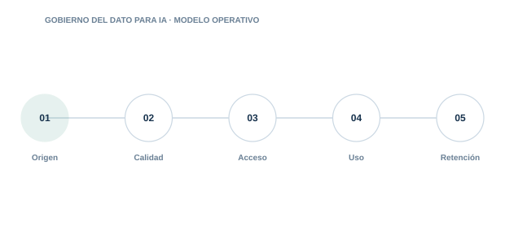

12 · PILAR
Gobierno del dato para IA
Garantizar calidad, legalidad, trazabilidad y protección de los datos usados por la IA.

Directorio del pilar6 guías · acceso directo
12.0112.0212.0312.0412.0512.06
Datos de entrenamiento
Gobierna fuentes. calidad. legitimidad. sesgo. minimización y linaje.
Datos RAG
Controla documentos. permisos. actualización y retirada del conocimiento recuperable.
Datos sintéticos
Usa datos generados sin asumir que son automáticamente seguros o representativos.
PII en LLM
Reduce exposición de datos personales en prompts. contexto. logs y respuestas.
Copyright y linaje
Documenta derechos. licencias. fuentes y transformaciones de contenido.
Retención de datos
Define cuánto conservar prompts. respuestas. embeddings. memoria y logs.
01
OrigenControl y evidencia aplicable
02
CalidadControl y evidencia aplicable
03
AccesoControl y evidencia aplicable
04
UsoControl y evidencia aplicable
05
RetenciónControl y evidencia aplicable
Cada guía incluye explicación, implantación, controles, evidencias, errores habituales, métricas y referencias.